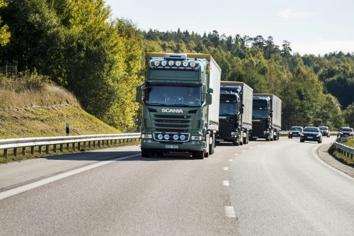
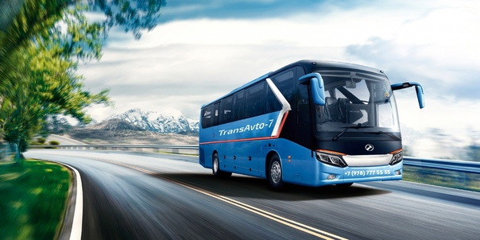

Легковые авто и мотоциклы
Легковые авто и мотоциклы могут двигаться со скоростью, не превышающей требования установленного на дороге знака 3.24 «Ограничение максимальной скорости», но не более 140 км/ч. На дорогах с разделительной полосой скорость должна быть не более 110 км/ч, на остальных дорогах — не более 100 км/ч.

Грузовые автомобили
Для грузовых автомобилей (с максимальной массой не более 3,5 т),
междугородних автобусов и микроавтобусов устанавливается скоростной лимит в пределах 110 км/ч.
На дорогах, имеющих разделительную полосу, максимально допустимая скорость составляет
не более 100 км/час, на остальных — не более 90 км/ч.

Автобусы и другие
Другие автобусы, в том числе те,
которые перевозят группы детей, легковые авто при буксировке прицепа,
грузовики (свыше 3,5 т), могут двигаться по трассе со скоростью не более 90 км/ч.
На дорогах с разделительной полосой лимит скорости составляет 80 км/ч,
на остальных дорогах — не более 70 км/ч.
